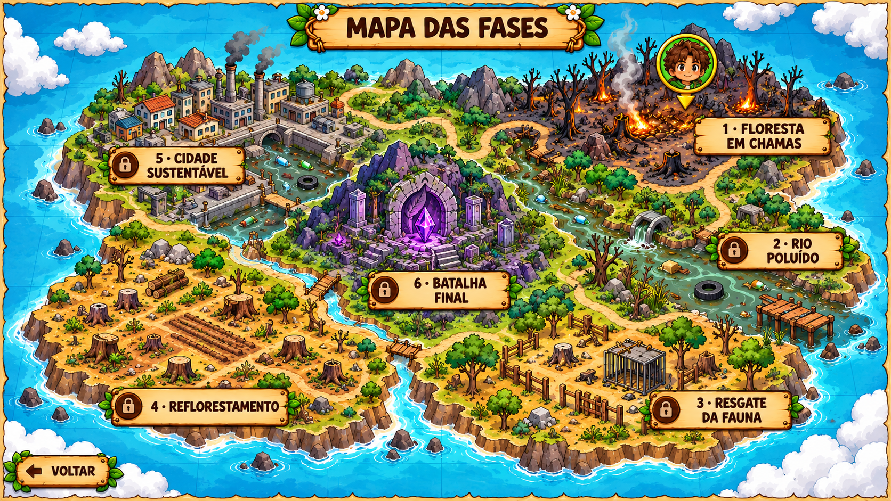
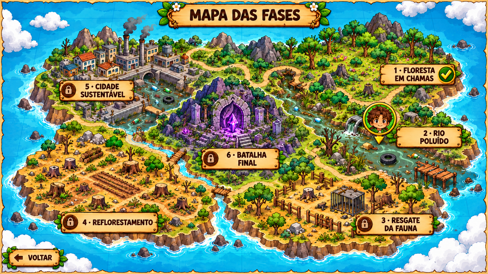

Kai e Flora · Uma jornada pela vida
Escolha seu próximo destino
Floresta em Chamas


Toque nas regiões para conhecer cada missão.
Sua jornada
Toque em uma região do mapa ou escolha uma fase abaixo.
O retrato de Kai mostra a fase atual. As regiões seguintes são liberadas ao completar a anterior.
Uma ilha com seis regiões: floresta em chamas, rio poluído, resgate da fauna, reflorestamento, cidade sustentável e uma ruína central para a batalha final. Kai indica a fase atual.